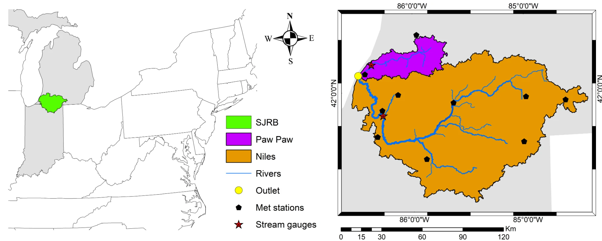
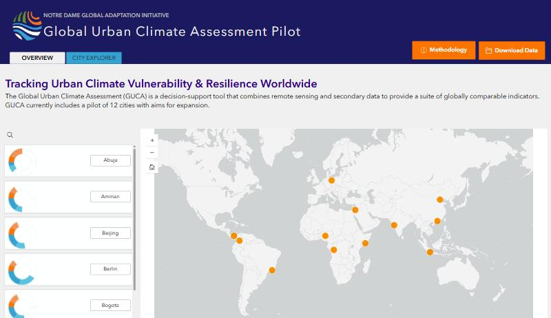
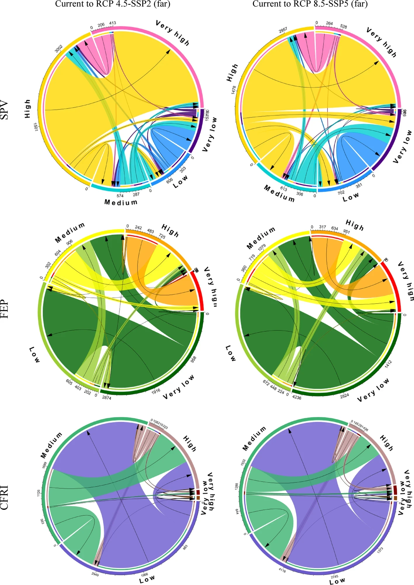
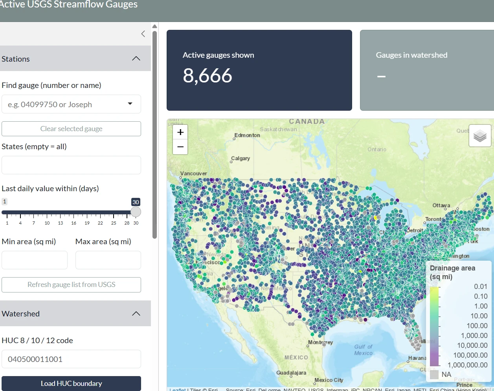
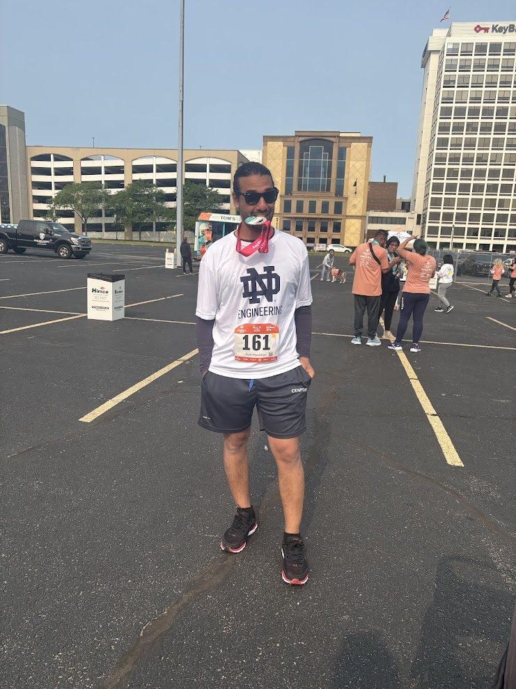
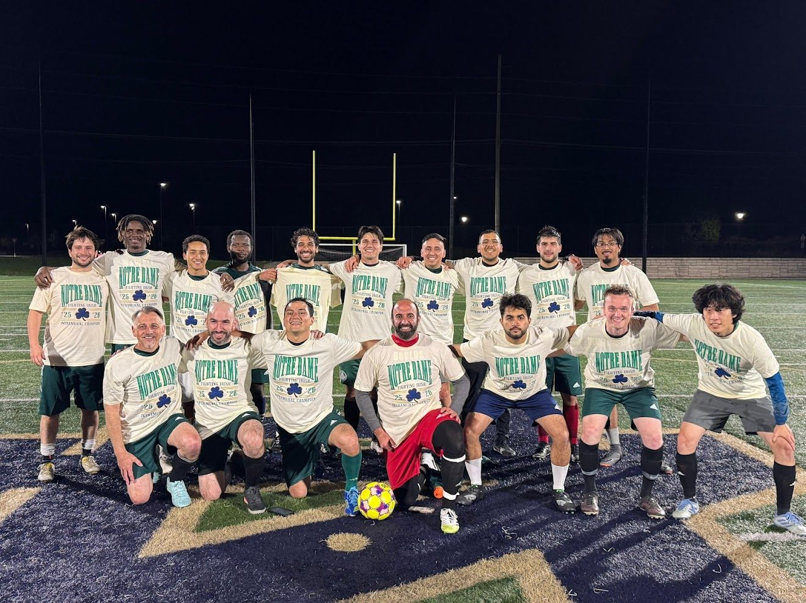
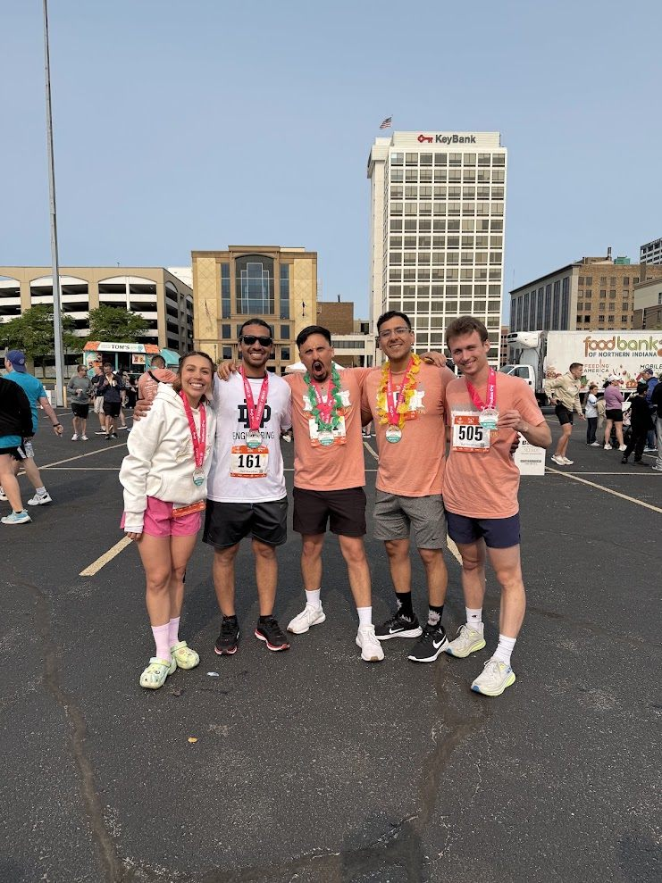
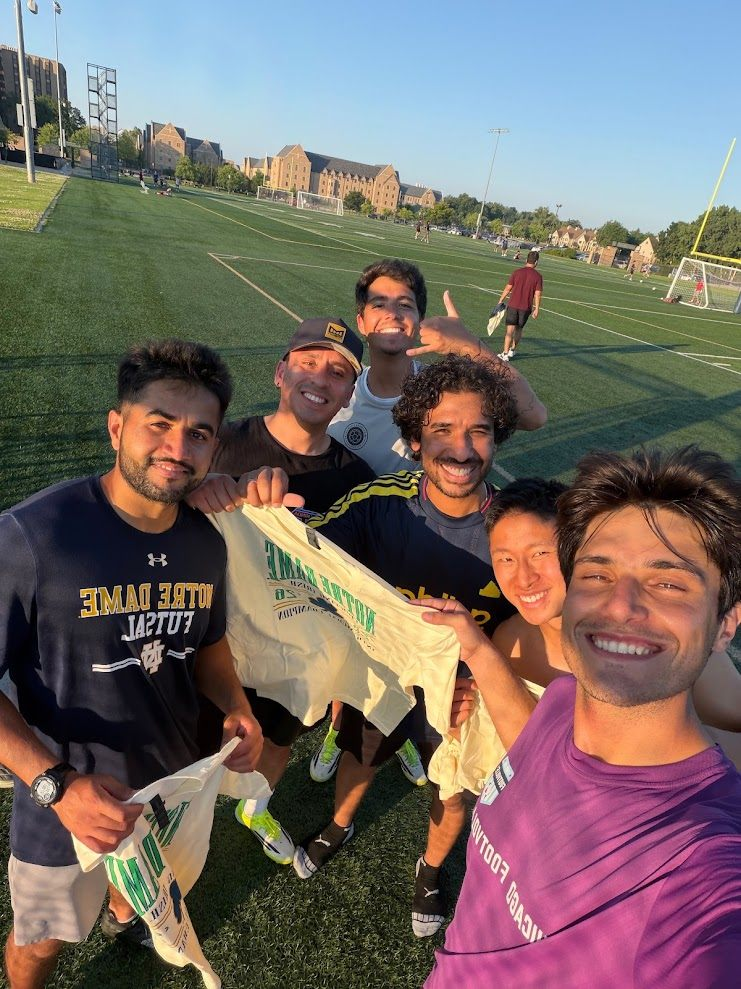
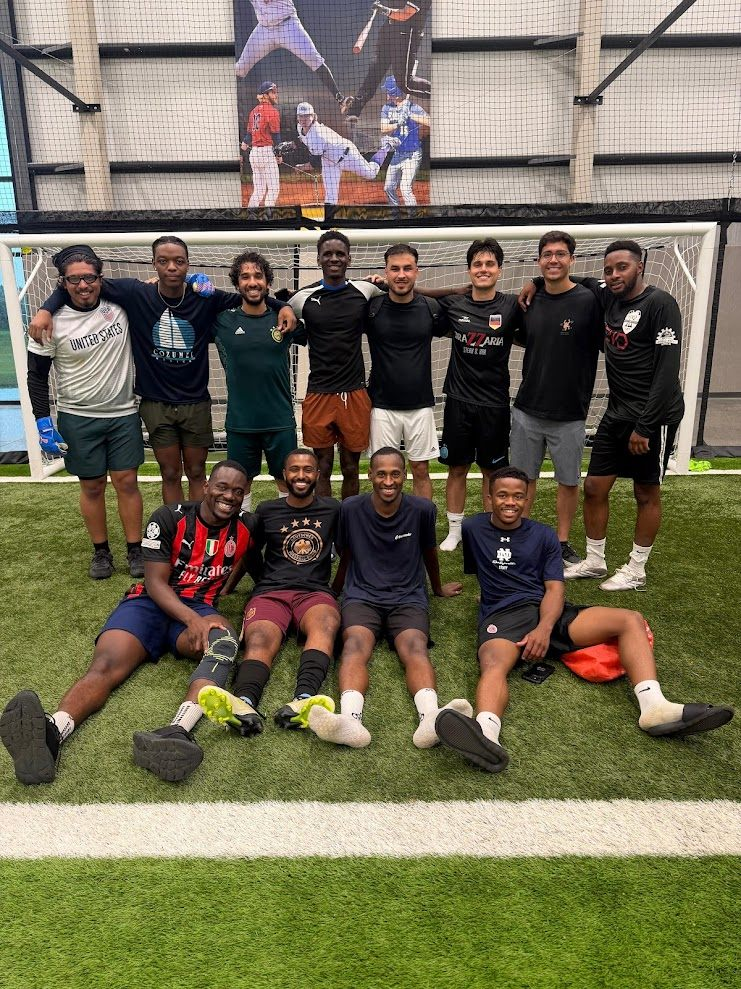

Watershed response to climate & management
SWAT models of the St. Joseph River Basin quantify how land-use change, future climate and winter cover crops shift river flow, sediment, nitrate and phosphorus delivery to Lake Michigan.
Assistant Research Professor · University of Notre Dame · Environmental Change Initiative
I build watershed models that help communities decide what to do about floods, water quality and water availability in a changing climate.

About
I am a hydrologist who studies how water behaves in landscapes shaped by people, and what communities can do when floods, pollution or scarcity threaten them. My research brings together process-based hydrologic modeling, geospatial analysis, climate information, machine learning and optimization.
The goal is science that is credible and useful: tools that communities, watershed organizations, engineers and conservation professionals can actually use to compare options under uncertainty.
I hold a Ph.D. in Agricultural and Biological Engineering from Purdue University, an M.E. in Geo-detection and Information Technology from China University of Geosciences, Beijing, and a B.S. in Geosciences from Suez Canal University, Egypt.
Research
A progression from understanding hydrologic processes, to assessing risk, to evaluating interventions and helping communities compare choices under uncertainty.

SWAT models of the St. Joseph River Basin quantify how land-use change, future climate and winter cover crops shift river flow, sediment, nitrate and phosphorus delivery to Lake Michigan.

Flood-exposure and water-security indicators for cities in very different climatic and socioeconomic settings, built from ERA5-Land reanalysis and Google Earth Engine as part of a public decision-support tool for equitable climate-resilience planning.

Rather than a single deterministic forecast, this work asks how flood risk may shift across a city and which communities bear it. It brings together climate projections, urban development, exposure and social vulnerability. Applied to Indianapolis, and to Texas.
Automated workflows linking process-based models with machine-learning emulators, large scenario ensembles, uncertainty analysis and multi-objective optimization, so tradeoffs can be explored in minutes, not months.

Projects & partnerships
Active, funded projects and the partners they serve, and what my part in each is.
Lead for watershed modeling
I lead the watershed-modeling workstream: model development, calibration and scenario design, keeping the AI components grounded in sound hydrology as the team builds the decision-support framework.
Model and scenario framework
Working with the Elkhart County Soil & Water Conservation District, I build the watershed model and scenario tools around local priorities and field monitoring. It doubles as a real-world testbed for CLEAR.
Hydrologic modeling and tradeoff analysis
I connect hydrologic simulations to multi-objective analysis so partners can weigh flood reduction, water quality, farm productivity and cost together.
Publications
Full list on Google Scholar →
Mentoring & Community
I work with watershed organizations, soil and water conservation districts, municipal partners and practitioners so modeled alternatives, performance measures and tool design reflect the decisions stakeholders actually face, and I bring what I learn from them back into the science.
Toolkit
Background
Beyond the lab
Outside of work, I enjoy spending time with my family and daughters, running, and playing soccer.





Contact
Interested in collaboration, student opportunities, or putting these tools to work in your watershed? I’d like to hear from you.
Environmental Change Initiative · University of Notre Dame